A1
Seite A Wand
- Maß
- 4.00 × 1.50 m
- Unterkante
- 0.00 m
- Datei
- + 20 mm Beschnitt
Seite A, Außenwand, durchgehend bis zur Saladette
QR Codes unten links nicht beschneiden
Alle Flächen des Kiosks in Endmaß 1:1 mit Beschnitt, einzeln oder als Komplettpaket. Unten steht für jede Fläche, wo sie hinkommt, wie groß sie ist und in welcher Höhe sie sitzt.
Draufsicht, Front unten, Rolltreppe hinten. Auf eine Nummer klicken springt zur Fläche.
| Nr | Fläche | Maß | UK | Ort |
|---|---|---|---|---|
| A1 | Seite A Wand | 4.00 × 1.50 m | 0.00 m | Seite A, Außenwand, durchgehend bis zur Saladette |
| A2 | Seite A Saladette | 0.89 × 0.87 m | 0.00 m | Seite A vorn, Saladette unter der Arbeitsplatte |
| A3 | Seite A Rückseite Rolltreppe | 0.92 × 1.50 m | 0.00 m | hinten links, Ecke zur Rolltreppe |
| A4 | Seite A Werbetafel | 4.00 × 0.50 m | 2.30 m | über Seite A, Werbetafel |
| B1 | Seite B Wand | 4.89 × 1.50 m | 0.00 m | Seite B, Außenwand, durchgehend |
| B2 | Seite B Rückseite Rolltreppe | 0.92 × 1.50 m | 0.00 m | hinten rechts, Ecke zur Rolltreppe |
| B3 | Seite B Werbetafel | 4.00 × 0.50 m | 2.30 m | über Seite B, Werbetafel |
| F1 | Front Werbetafel Menüboard | 4.80 × 0.50 m | 2.30 m | Front oben, Werbetafel mit Preisen |
| F2 | Front Theke Mitte | 1.80 × 0.87 m | 0.00 m | Front unten, mittig auf der Theke |
| I1 | Innen Wandsticker Bowls oben | 1.40 × 0.70 m | 1.80 m | innen Rückwand rechts neben der Tür, oben |
| I2 | Innen Wandsticker Drinks unten | 1.40 × 0.70 m | 1.05 m | innen Rückwand rechts neben der Tür, unten |
Vorschau zeigt das Endmaß. Die Dateien enthalten zusätzlich 20 mm Beschnitt.
Dschungel mit drei Bowls, From the Amazon to your spoon
Seite A, Außenwand, durchgehend bis zur Saladette
QR Codes unten links nicht beschneiden
Seite A vorn, Saladette unter der Arbeitsplatte
schließt rechts nahtlos an A1 an
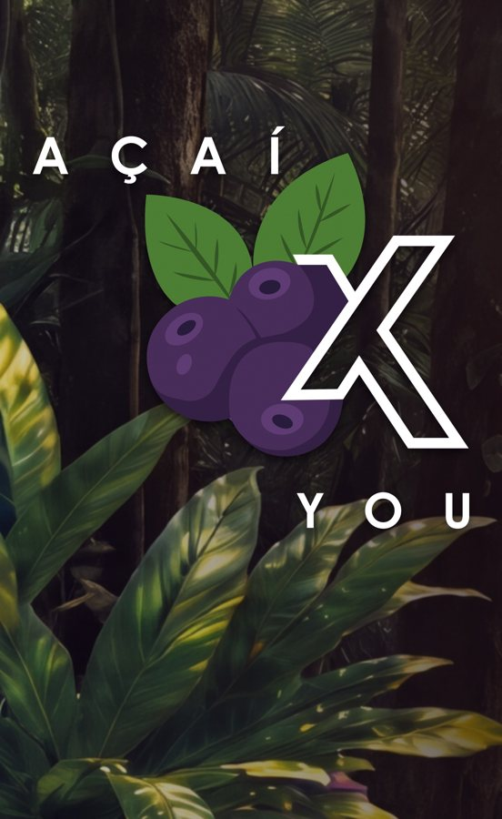
hinten links, Ecke zur Rolltreppe
Motiv läuft von A1 um die Ecke
über Seite A, Werbetafel
Oberkante 2,80 m
Lila wie das Ladenplakat, zwei Becher mit fliegenden Toppings
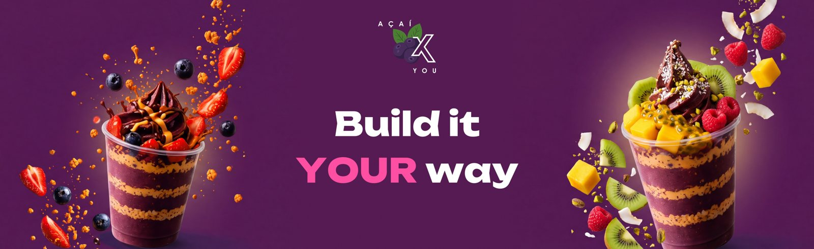
Seite B, Außenwand, durchgehend
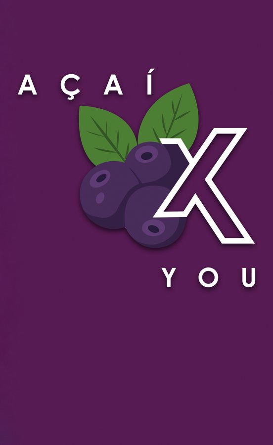
hinten rechts, Ecke zur Rolltreppe
Motiv läuft von B1 um die Ecke
über Seite B, Werbetafel
Oberkante 2,80 m
Menüboard oben, Theke unten mit Logo
Front oben, Werbetafel mit Preisen
Oberkante 2,80 m
Front unten, mittig auf der Theke
links und rechts je 1,50 m Holzverkleidung, nicht bekleben
Wandsticker an der Rückwand neben der Tür
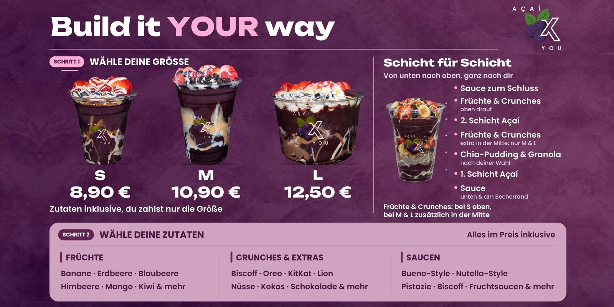
innen Rückwand rechts neben der Tür, oben
Wandsticker
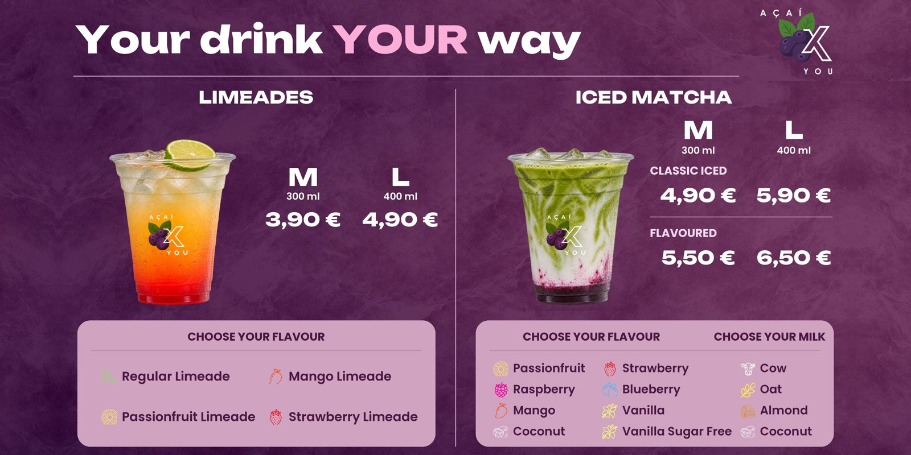
innen Rückwand rechts neben der Tür, unten
Wandsticker, 5 cm Abstand zu I1
Visualisierung zur Orientierung.
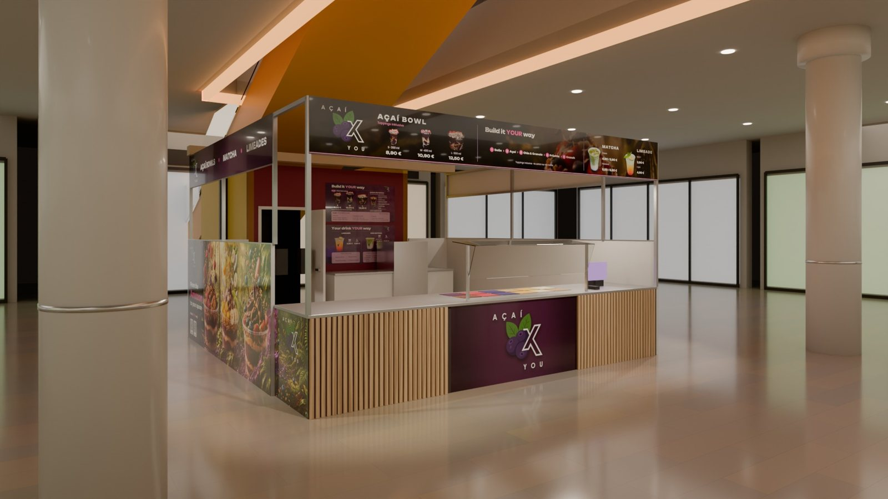
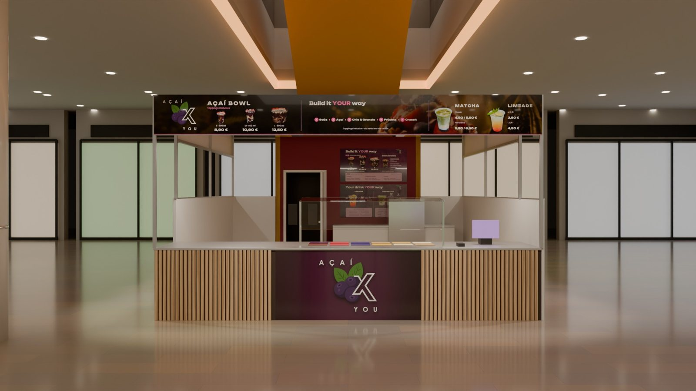
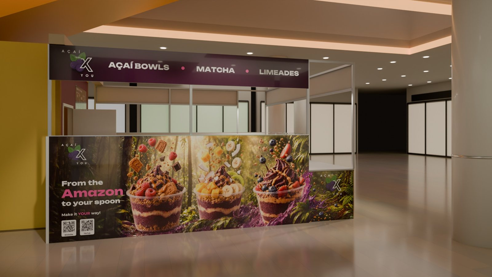
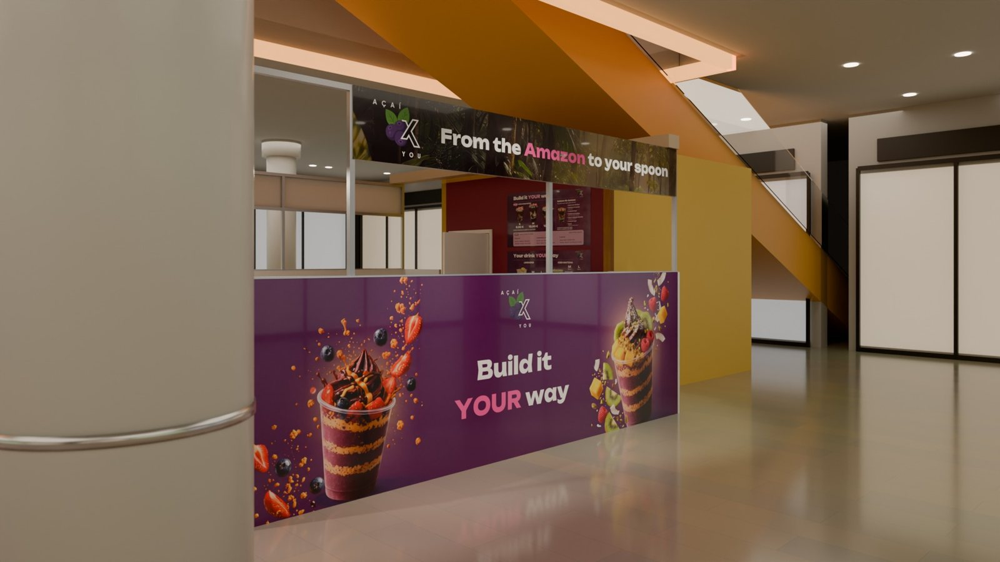
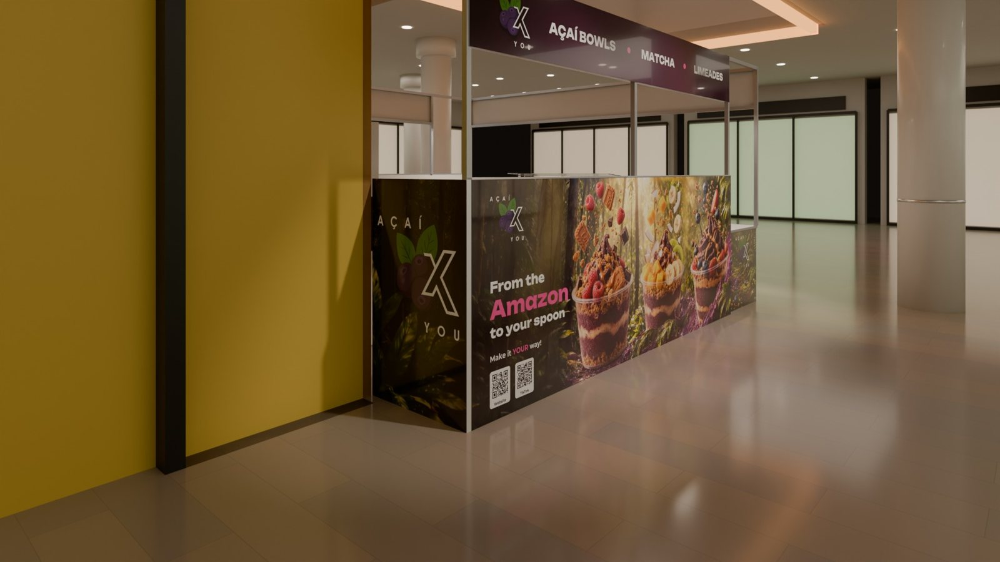
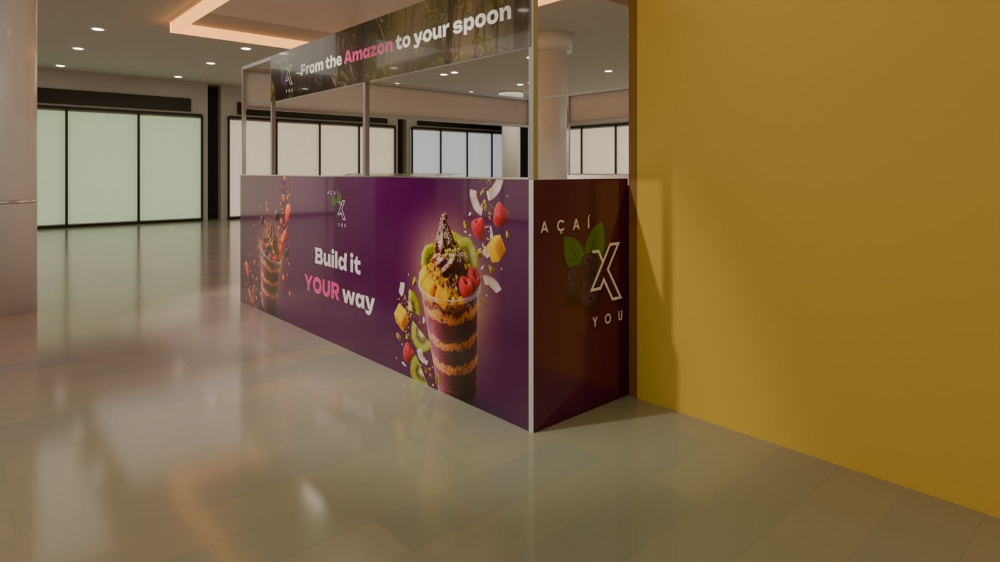
Bitte vor dem Druck kurz prüfen.